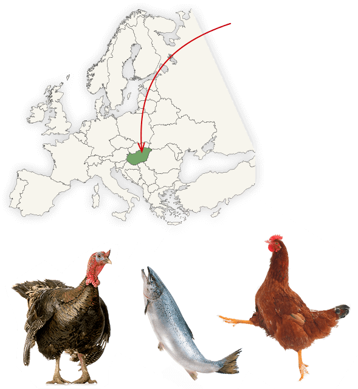
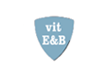

Mістить комплекс «Naturium» – особливу комбінацію волокон природного походження, а також джерело натуральних пребіотиків, що сприяє здоровому травленню.
Обираєш перший корм для кошеняти чи намагаєшся підібрати харчування відповідно до потреб свого кота? Спробуй Cat Chow®! Розроблений фахівцями у галузі кормів для тварин, у тому числі ветеринарами та дієтологами, корм Cat Chow® не містить доданих штучних ароматизаторів, барвників та консервантів. Він забезпечує вашому улюбленцю харчування з усіма необхідними, відповідно до його стадії життя, інгредієнтами.
Cat Chow® – корм, який має сподобатись вашому коту!
Це справжній Європейський корм. Виготовляється на фабриці в Угорщині, у місті Бюк
Усі корми CAT CHOW® містять курку, індичку або лосось, а також спеціально підібрані високоякісні джерела білку для задоволення природних потреб кота
м’яса та субпродуктів тваринного походження вохдить до складу корму CAT CHOW®
протеїнів входять до складу будь-якого корму CAT CHOW®
Корм CAT CHOW® дбайливо виготовлений з натуральними інгредієнтами (петрушка, шпинат, морква, цільнозернові злаки, цикорій та дріжджі), що доповнюють смачний корм.
Mістить комплекс «Naturium» – особливу комбінацію волокон природного походження, а також джерело натуральних пребіотиків, що сприяє здоровому травленню.
Усі корми CAT CHOW® містять вітамін Е для підтримки природного захисту організму. А також вітаміни групи В, які допомагають використовувати енергію продуктивно.  Корм містить антиоксиданти для розвитку серця та рекомендований для вживання, як профілактичний засіб проти сечокам'яної хвороби. А корм CAT CHOW® KITTEN містить омега-3 жирну кислоту , яка є в молоці матері, щоб допомогти підтримати розвиток мозку і зору Вашого кошеняти.
Не містить доданих синтетичних ароматизаторів, барвників та консервантів.

CУХИЙ ПОВНОРАЦІОННИЙ КОРМ ДЛЯ КОШЕНЯТ. ТАКОЖ ПІДХОДИТЬ ДЛЯ ВАГІТНИХ КІШОК У ПЕРІОД ЛАКТАЦІЇ
Сухий повнораціонний корм з високим вмістом м’яса курятини та поживними речовинами, необхідними для задоволення природних потреб кота та здорового функціонування організму молодих котів, вагітних кішок та кішок у період лактації. Корм містить ДГК (докозагексаєнову кислоту) - компонент материнського молока, який сприяє розвитку розумових здібностей і органів зору тварин. А також вирізняється високим вмістом спеціально підібраних джерел протеїну та особливими поєднаннями волокон природного походження, що сприяють нормалізації травлення.
Склад: м’ясо та субпродукти тваринного походження (33%(2)), зернові (32% цільнозернові(1)), екстракти рослинного протеїну, жир тваринний, продукти переробки овочів (2.7% буряковий жом сушений, 0.07% петрушка сушена еквівалентно 0.4% петрушки(1)), овочі(1) (2% корінь цикорію сушений, 0.07% морква сушена еквівалентно 0.4% моркви, 0.07% шпинат сушений еквівалентно 0.4% шпинату), вітаміни та мінеральні речовини, дріжджі(1) (0.3%), антиоксиданти (бутил гідрооксианізол, бутил гідрокситолуол, пропіл галат), ортофосфорна кислота, холін хлорид, таурин. (1) Натуральні інгредієнти. (2) Еквівалентно 66% регідратованого м’яса та субпродуктів тваринного походження, мінімум 14% курки.
ВІТАМІНИ (МО/кг): вітамін А: 17000; вітамін D3: 1410; вітамін Е: 120; вітаміни групи В: 150 мг/кг. Мінеральні речовини (мг/кг): сульфат заліза: 195; кальцію йодат: 3.2; міді сульфат: 47; сульфат марганцю: 21; цинку сульфат: 245; натрію селеніт: 0.3.
ТИПОВИЙ АНАЛІЗ (%): протеїн: 40,0; жир: 12,0; сира зола: 8,5; сира клітковина: 2,5; волога: 7,5; докозагексаєнова кислота: 0,01.
Енергетична цінність (калорійність) 345ккал/100г.
Доступні формати упаковки: 400г15кг

СУХИЙ ПОВНОРАЦІОННИЙ КОРМ ДЛЯ ДОРОСЛИХ КОТІВ
Повнораціонний корм Cat Chow® з куркою для дорослих котів містить збалансовану кількість поживних речовин, необхідних для підтримки здоров'я котів у період зрілості (після досягнення року). Вітаміни групи В та Е, що входять до складу корму, забезпечують природний захист організму вашого улюбленця, спеціально підібрані джерела протеїну задовольняють природні потреби кота, а особлива комбінація волокон природного походження підтримує здорове функціонування травної системи кота.
Склад: зернові (45% цільнозернові(1)), м’ясо та субпродукти тваринного походження (20%(2)), екстракти рослинного протеїну, жир тваринний, продукти переробки овочів (2.7% буряковий жом сушений, 0.07% петрушка сушена еквівалентно 0.4% петрушки(1)), овочі(1) (2% корінь цикорію сушений, 0.07% морква сушена еквівалентно 0.4% моркви, 0.07% шпинат сушений еквівалентно 0.4% шпинату), вітаміни та мінеральні речовини, дріжджі(1) (0.3%), антиоксиданти (бутил гідрооксианізол, бутил гідрокситолуол, пропіл галат), ортофосфорна кислота, холін хлорид, таурин. (1) Натуральні інгредієнти. (2) Еквівалентно 40% регідратованого м’яса та субпродуктів тваринного походження, мінімум 14% курки.
Вітаміни (МО/кг): вітамін А: 11500; вітамін D3: 950; вітамін Е: 80; вітаміни групи В: 105 мг/кг. Мінеральні речовини (мг/кг): сульфат заліза: 130; кальцію йодат: 2,2; міді сульфат: 32; сульфат марганцю: 14; цинку сульфат: 160; натрію селеніт: 0,2.
Типовий аналіз (%): протеїн: 32,0; жир: 11,0; сира зола: 7,5; сира клітковина: 2,5; волога: 7,5.
Енергетична цінність: 344ккал/100г
Доступні формати упаковки: 400г15кг

СУХИЙ ПОВНОРАЦІОННИЙ КОРМ ДЛЯ ДОРОСЛИХ КОТІВ З ФОРМУЛОЮ ПОТРІЙНОЇ ДІЇ
Повнораціонний корм для дорослих котів зі спеціальною формулою потрійної дії, що зменшує накопичення зубного каменю (до 40%), підтримує здоров'я сечовидільної системи котів та запобігає утворенню грудок шерсті в шлунково-кишковому тракті, містить вітаміни Е та В. А також, завдяки поєднанню натуральних інгредієнтів з ретельно відібраними травами і овочами (петрушка, шпинат, морква, цикорій), корм підтримує імунітет та енергійність тварин.
Склад: зернові (34% цільнозернові(1)), м’ясо та субпродукти тваринного походження (10%(2)), екстракти рослинного протеїну, продукти переробки овочів (5.4% буряковий жом сушений, 0.07% петрушка сушена еквівалентно 0.4% петрушки(1)), жир тваринний, овочі(1) (2% корінь цикорію сушений, 0.07% морква сушена еквівалентно 0.4% моркви, 0.07% шпинат сушений еквівалентно 0.4% шпинату), вітаміни та мінеральні речовини, дріжджі(1) (0.3%), антиоксиданти (бутил гідрооксианізол, бутил гідрокситолуол, пропіл галат), ортофосфорна кислота, холін хлорид, таурин. (1) Натуральні інгредієнти. (2) Еквівалентно 20% регідратованого м’яса та субпродуктів тваринного походження, мінімум 14% індички.
Вітаміни (МО/кг): ВІТАМІНИ (МО/кг): вітамін А: 14000; вітамін D3: 1150; вітамін Е: 100; вітаміни групи В: 120 мг/кг. Мінеральні речовини (мг/кг): сульфат заліза: 160; кальцію йодат: 2,6; міді сульфат: 39; сульфат марганцю: 17; цинку сульфат: 200; натрію селеніт: 0,2.
Типовий аналіз (%): протеїн: 32,0; жир: 11,0; сира зола: 7,5; сира клітковина: 5,5; волога 7,5.
Енергетична цінність: 333ккал/100г
Доступні формати упаковки: 400г15кг

СУХИЙ ПОВНОРАЦІОННИЙ КОРМ ДЛЯ ДОРОСЛИХ СТЕРИЛІЗОВАНИХ КІШОК/КАСТРОВАНИХ КОТІВ
Спеціально розроблений корм Cat Chow® для дорослих стерилізованих кішок та кастрованих котів допомагає врівноважити вплив гормональних змін та такі можливі наслідки кастрації і стерилізації улюбленців, як поява надмірної ваги та виникнення проблем із сечовипусканням. Завдяки збалансованому рівню білків і жирів, цей корм допомагає стерилізованим кішкам та кастрованим котам підтримувати здоровий розвиток м’язової тканини та оптимальну вагу. А вітаміни групи Е та В забезпечують природний захист організму та енергійність улюбленців.
Склад: зернові (39% цільнозернові(1)), м’ясо та субпродукти тваринного походження (10%(2)), екстракти рослинного протеїну, жир тваринний, продукти переробки овочів (2.7% буряковий жом сушений, 0.07% петрушка сушена еквівалентно 0.4% петрушки(1)), овочі(1) (2% корінь цикорію сушений, 0.07% морква сушена еквівалентно 0.4% моркви, 0.07% шпинат сушений еквівалентно 0.4% шпинату), вітаміни та мінеральні речовини, дріжджі(1) (0.3%), антиоксиданти (бутил гідрооксианізол, бутил гідрокситолуол, пропіл галат), ортофосфорна кислота, холін хлорид, таурин. (1) Натуральні інгредієнти. (2) Еквівалентно 20% регідратованого м’яса та субпродуктів тваринного походження, мінімум 14% курки.
Вітаміни (МО/кг): вітамін А: 14000; вітамін D3: 1150; вітамін Е: 100; вітаміни групи В: 120 мг/кг. Мінеральні речовини (мг/кг): сульфат заліза: 160; кальцію йодат: 2.6; міді сульфат: 39; сульфат марганцю: 17; цинку сульфат: 200; натрію селеніт: 0.2.
Типовий аналіз (%): протеїн: 35,0; жир: 9,0; сира зола: 7,5; сира клітковина: 3,5; волога: 7,5.
Енергетична цінність:330ккал/100г.
Доступні формати упаковки: 400г1.5кг15кг

СУХИЙ ПОВНОРАЦІОННИЙ КОРМ ДЛЯ ДОРОСЛИХ КОТІВ, ДЛЯ ПІДТРИМКИ СЕЧОВОЇ СИСТЕМИ У ЗДОРОВОМУ СТАНІ.
Корм Cat Chow® для підтримки сечової системи у здоровому стані добре підходить для харчування дорослих котів. Корм містить збалансований склад мінеральних речовин, що сприяє здоровому функціонуванню сечовидільної системи, а особливе поєднання харчових волокон природного походження - комплекс Naturium®, підтримує здоров'я травної системи домашніх улюбленців.
Склад: зернові (42% цільнозернові(1)), м’ясо та субпродукти тваринного походження (10%(2)), екстракти рослинного протеїну, жир тваринний, (0.7% риб'ячого жиру), продукти переробки овочів (2.7% буряковий жом сушений, 0.07% петрушка сушена еквівалентно 0.4% петрушки(1)), овочі(1) (2% корінь цикорію сушений, 0.07% морква сушена еквівалентно 0.4% моркви, 0.07% шпинат сушений еквівалентно 0.4% шпинату), вітаміни та мінеральні речовини, дріжджі(1) (0.3%), антиоксиданти (бутил гідрооксианізол, бутил гідрокситолуол, пропіл галат), ортофосфорна кислота, холін хлорид, таурин. (1) Натуральні інгредієнти. (2) Еквівалентно 20% регідратованого м’яса та субпродуктів тваринного походження, мінімум 14% курки.
Вітаміни (МО/кг): вітамін А: 17000; вітамін D3: 1410; вітамін Е: 120; вітаміни групи В: 150 мг/кг. Мінеральні речовини (мг/кг): сульфат заліза: 195; кальцію йодат: 3.2; міді сульфат: 47; сульфат марганцю: 21; цинку сульфат: 245;натрію селеніт: 0.3.
Типовий аналіз (%): протеїн: 32.0; жир: 11.0; сира зола: 7.5; сира клітковина: 2.5; волога: 7,5.
Енергетична цінність:344ккал/100г.
Доступні формати упаковки: 400г1.5кг15кг

СУХИЙ ПОВНОРАЦІОННИЙ КОРМ ДЛЯ ДОРОСЛИХ КОТІВ, ПРОТИ УТВОРЕННЯ ВОЛОСЯНИХ КУЛЬОК У ТРАВНОМУ ТРАКТІ.
Корм Cat Chow® проти утворення волосяних кульок у травному тракті забезпечує збалансоване, повнораціонне харчування для дорослих тварин, особливо – для котів, що живуть вдома. Багатий на білок та харчові волокна, корм допомагає шерсті у два рази ефективніше виводитися зі шлунку домашніх улюбленців. Комплекс Naturium® допомагає підтримувати здорове травлення, а вітаміни Е та В зміцнювати імунітет тварин та підтримувати їх енергійність.
Склад: зернові (38% цільнозернові(1)), м’ясо та субпродукти тваринного походження (10%(2)), екстракти рослинного протеїну, жир тваринний, продукти переробки овочів (5.4% буряковий жом сушений, 0.07% петрушка сушена еквівалентно 0.4% петрушки(1)), овочі(1) (2% корінь цикорію сушений, 0.07% морква сушена еквівалентно 0.4% моркви, 0.07% шпинат сушений еквівалентно 0.4% шпинату), вітаміни та мінеральні речовини, дріжджі(1) (0.3%), антиоксиданти (бутил гідрооксианізол, бутил гідрокситолуол, пропіл галат), ортофосфорна кислота, холін хлорид, таурин. (1) Натуральні інгредієнти. (2) Еквівалентно 20% регідратованого м’яса та субпродуктів тваринного походження, мінімум 14% курки.
Вітаміни (МО/кг): вітамін А: 14000; вітамін D3: 1150; вітамін Е: 100; вітаміни групи В: 120 мг/кг. Мінеральні речовини (мг/кг): сульфат заліза: 160; кальцію йодат: 2,6; міді сульфат: 39; сульфат марганцю: 17; цинку сульфат: 200; натрію селеніт: 0,2.
Типовий аналіз (%): протеїн: 32,0; жир: 11,0; сира зола: 7,5; сира клітковина: 5,5; волога 7,5.
Енергетична цінність:333ккал/100г.
Доступні формати упаковки: 400г1.5кг15кг
®Власник торговельних марок: Сосьєте де Продюі Нестле С.А., Веве, Швейцарія. * Публічна Акція з умовною назвою «Світ очима кота», проводиться з 17.07.2017р. до 02.01.2018р., виключно на території України, крім Автономної Республіки Крим та зони проведення АТО, в мережі Інтернет. Детально з правилами, умовами та місцем проведення Акції з умовною назвою «Світ очима кота», можна дізнатися на сайті catchow.ua/rules